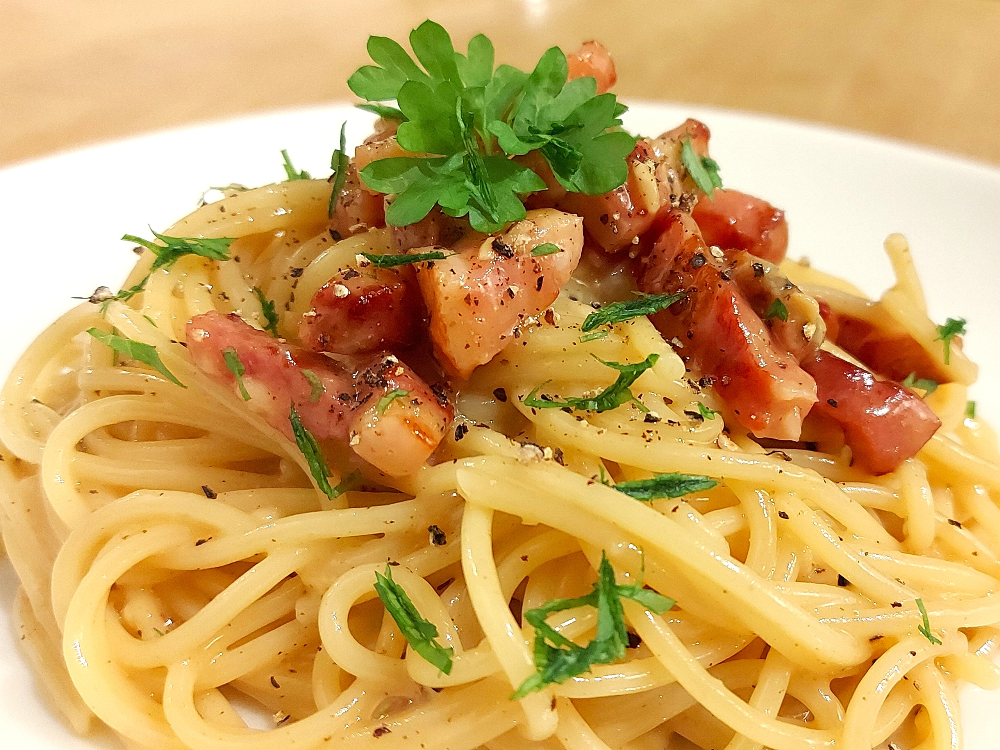

Carbonara

Carbonara made using this recipe.
Description
Here is my recipe for carbonara. It is super simple and made from Ingredients
I often have in the fridge already. (1 Serving)
Nutritional Information
(All values estimated)
- Protein: 38g
- Carbohydrates: 52g
- Fat: 31g
- Total Calories: 526kcal
Ingredients
- Spaghetti - 70g
- Egg (Medium) - 1
- Grated Cheddar/Parmesan - 40g
- Oil - 1 tsp
- Bacon/Pancetta - 50g lardons or 2 rashers
- Garlic - 2 cloves
- Salt - to taste
- Pepper - to taste
- Parsley - garnish
Method
- Boil the spaghetti for 10 minutes in lightly salted water.
- In a bowl, crack the egg and mix with the grated cheese.
- Heat the oil in a frying pan and add the bacon lardons (or cut rashers into small strips and add). Fry until slightly browned.
- Fry the garlic with the bacon until golden.
- Add the cooked spaghetti to the frying pan and stir until fully mixed.
- Take the frying pan off the heat and let it cool for 1 minute.
- Add the egg and cheese mixture to the spaghetti and stir
continuously until the cheese has fully melted.
- Season to taste with salt and pepper.
- Optionally garnish with parsley, and enjoy!
Back